Prologue
D'abord
Le gars derrière les visuels
Créer, imaginer, donner vie : c'est ce qui fait battre mon quotidien. J'aborde la publicité comme un terrain de jeu où le concept prime autant que l'esthétique.
Créatif, curieux, impliqué. Je crée des visuels qui racontent quelque chose. Publicité, graphisme, photo, vidéo.
Le gars derrière les visuels
Créer, imaginer, donner vie : c'est ce qui fait battre mon quotidien. J'aborde la publicité comme un terrain de jeu où le concept prime autant que l'esthétique.
BTS Communication
Le socle : communication, stratégie de contenu et production visuelle.
Deux stages, un mois chacun
Stage 1 · chezAGCOGroupe à dimension mondiale · 1 mois
Contenu social media, newsletters BtoC, retouche visuelle, analyse de performance.
Stage 2 · chezTredelecContenu publicitaire · 1 mois
Réseaux sociaux, animation des comptes, idées créatives, benchmarks concurrentiels.
Bachelor Création Publicitaire
Les codes de la publicité, le graphisme et la conception de campagnes.
Alternance, véhicules de luxe
Chargé de communication dans une concession de véhicules de luxe : création de contenu photo et vidéo, montage et post-production aux standards haut de gamme.
Réseaux sociaux, calendrier éditorial, storytelling visuel et image de marque.
Master Direction Artistique
En M1 à l'ESP Paris depuis septembre 2026, disponible dès maintenant. Je recherche une entreprise partenaire dans la publicité, le graphisme ou la création visuelle, à Paris et alentours.
Photoshop, Illustrator, InDesign, Premiere, After Effects, Lightroom · Français natif, anglais B2 · Permis B
Photographie automobile, campagnes pub, affiches de marque et créations vidéo. Cliquez pour explorer.
Affiches, campagnes de marque et expérience numérique.
20 pièces


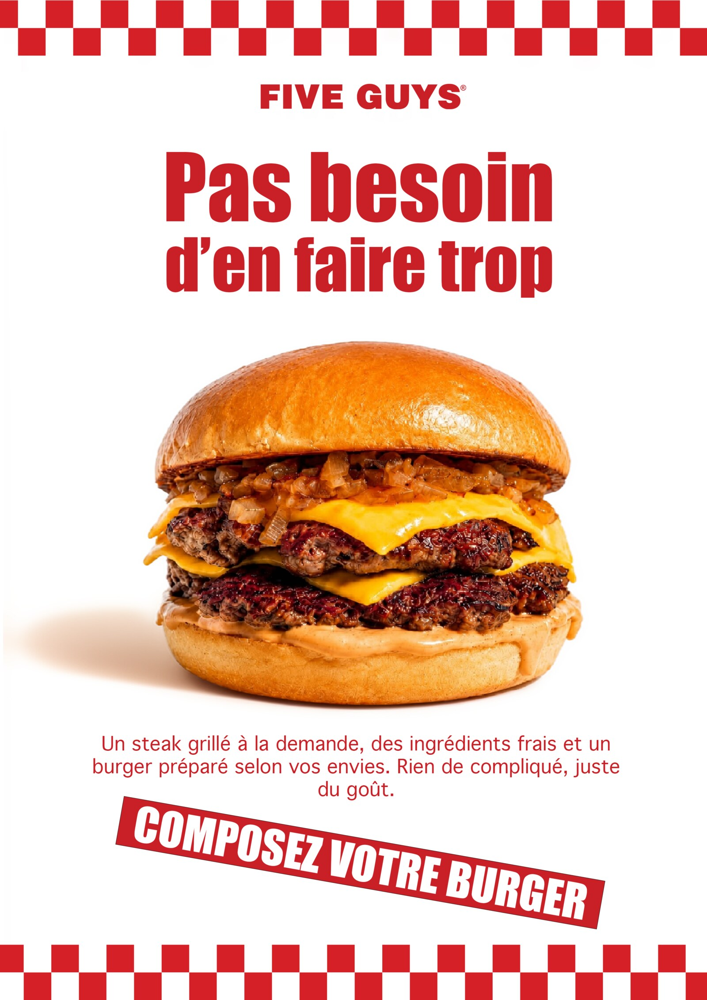


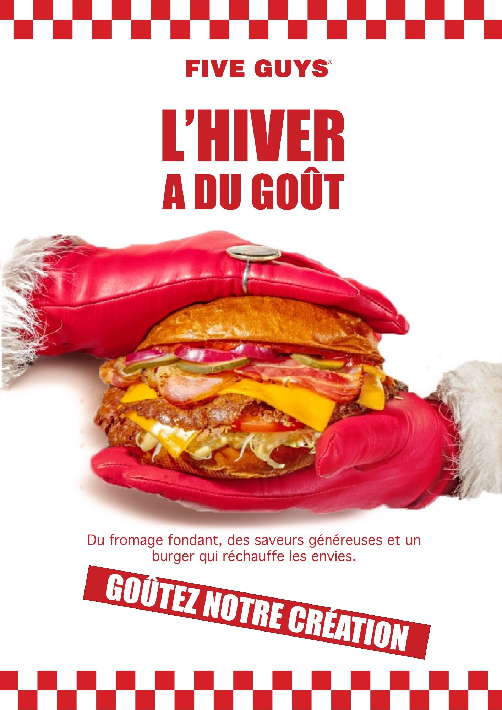
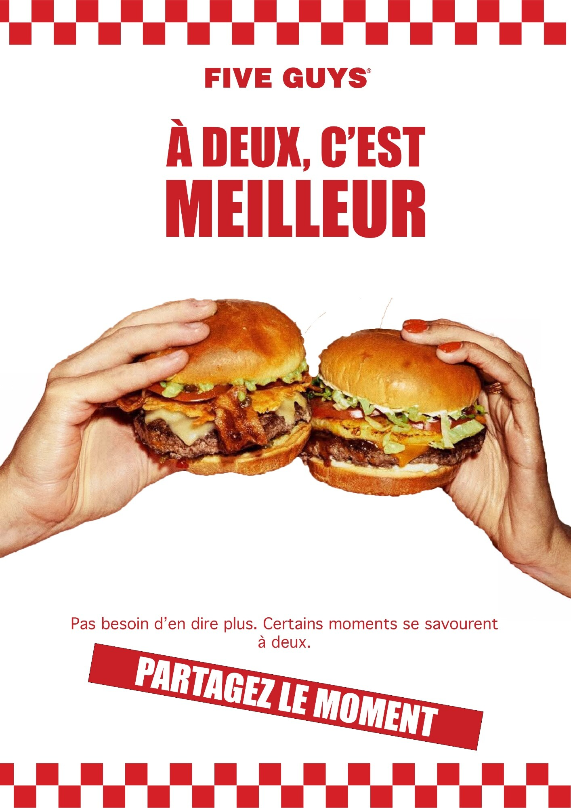


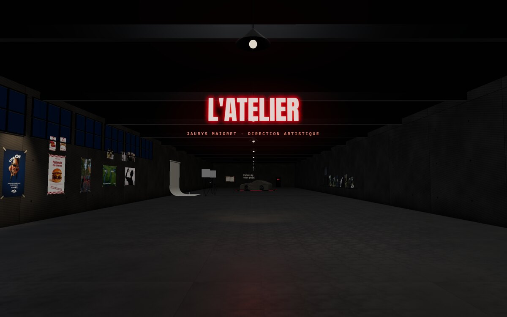
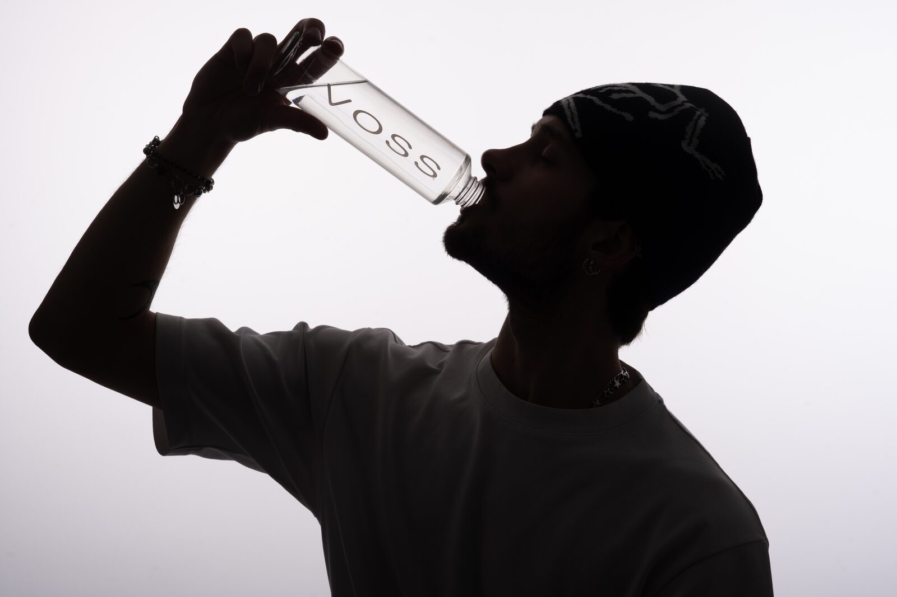


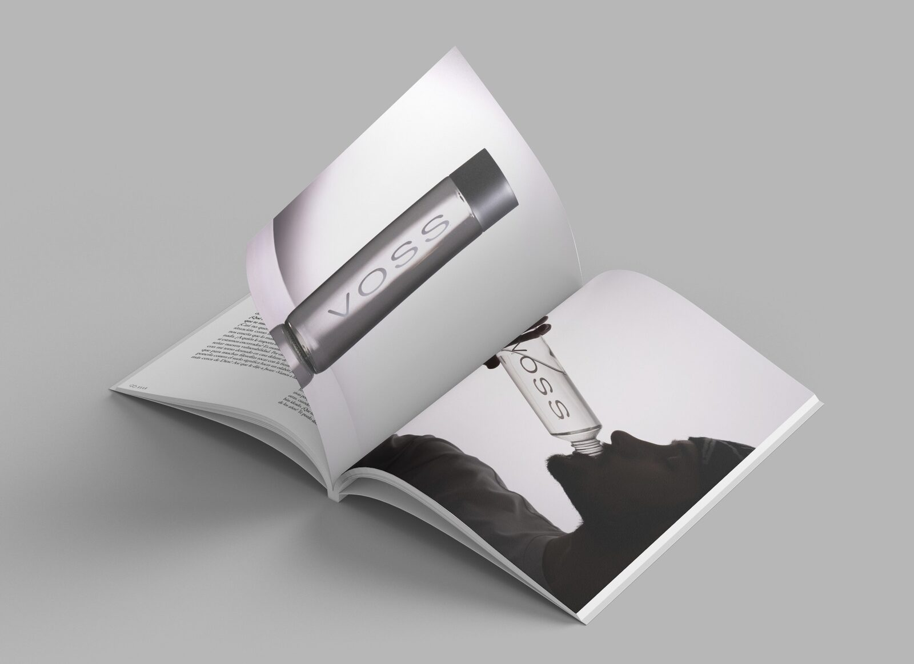


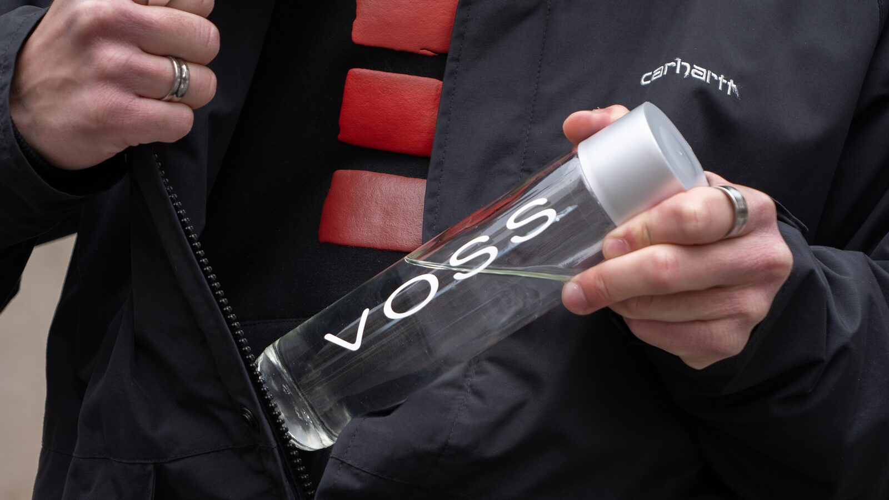

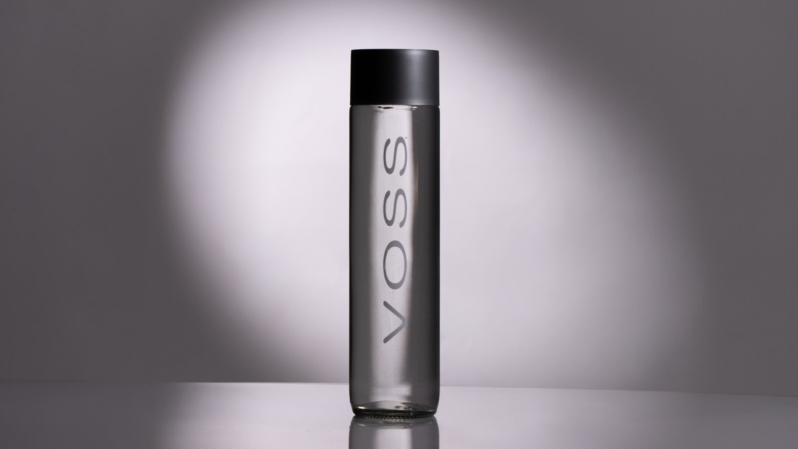
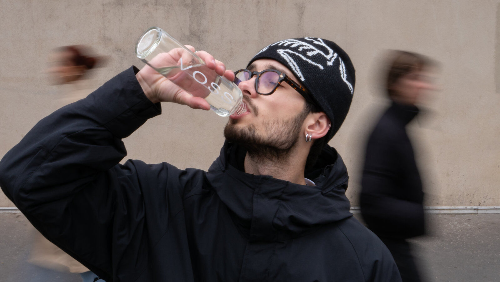
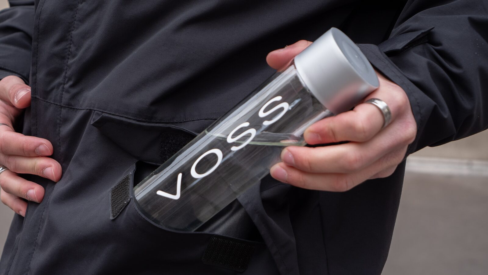
Concession, détails et mises en scène, pour Talon Pointe.
6 pièces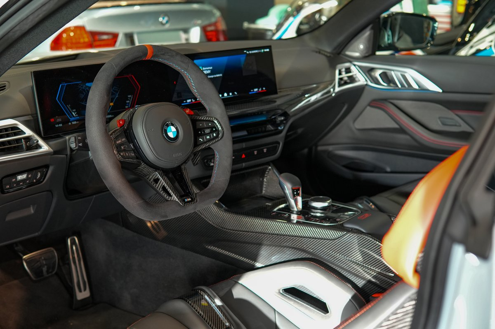
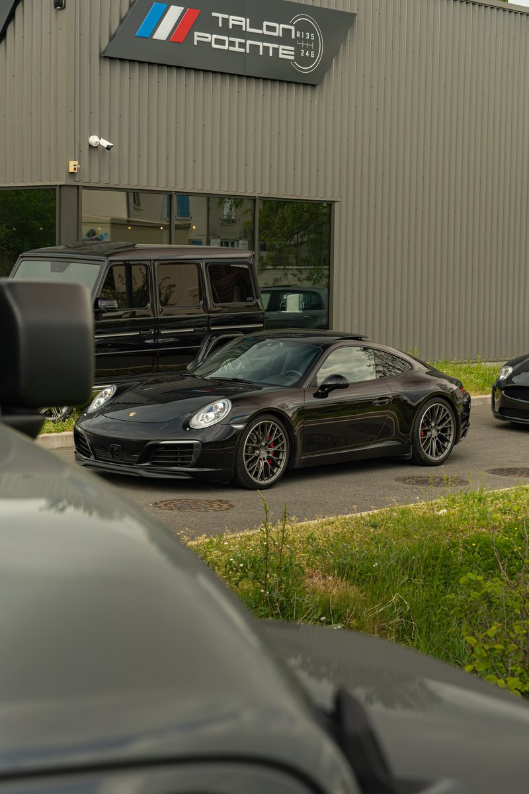
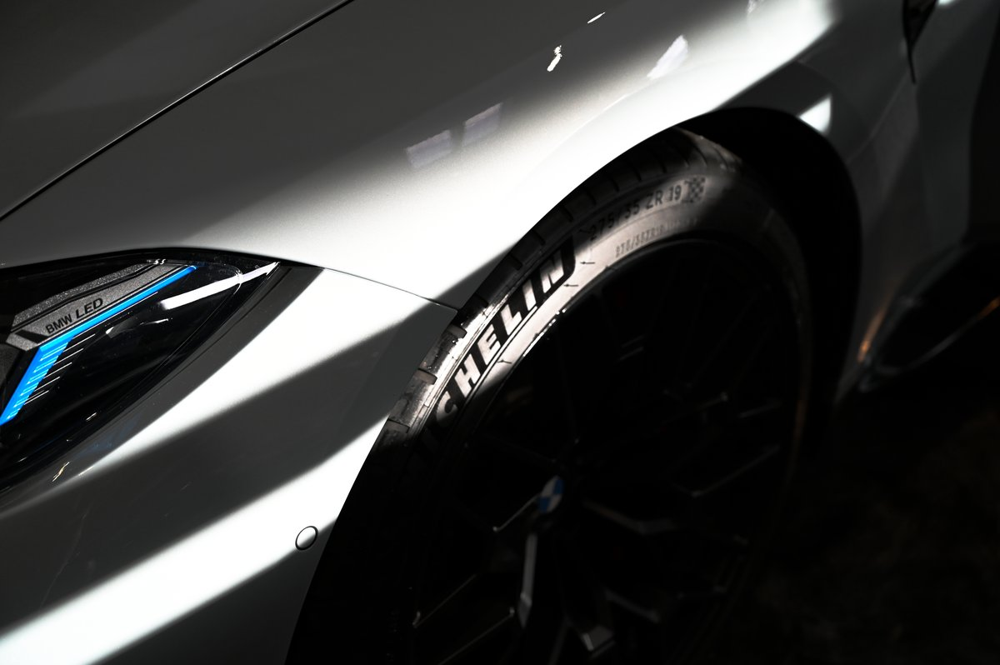
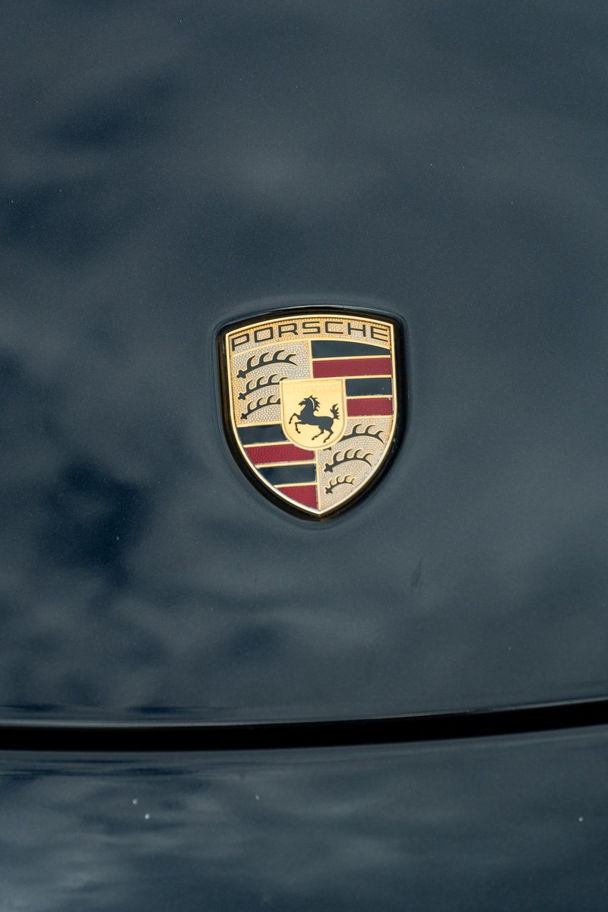


Poses longues, Voie lactée, lumière des villages à l'horizon.
4 pièces
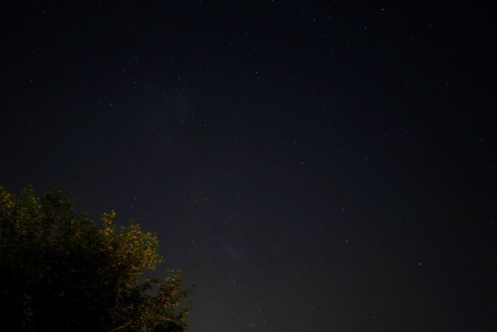


Tournage, montage et post-production.
5 pièces


Disponible dès maintenant en alternance, à Paris et en Île-de-France.En recherche d'alternance · Master Direction Artistique, ESP Paris.
maigretjaurys8@gmail.comParis & Île-de-France
Dès maintenant · Paris & Île-de-France
Permis B · Véhiculé